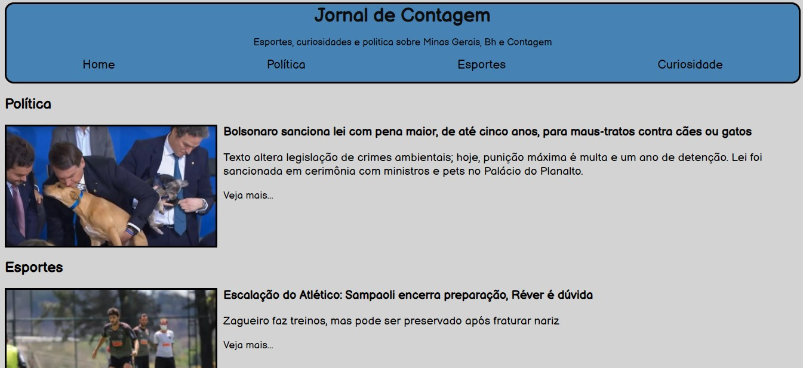
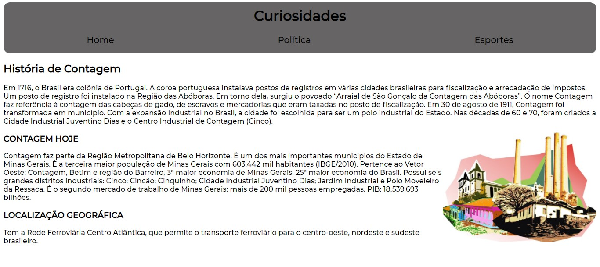

Sites Feitos
Jornal de Contagem


Esse site foi o primeiro que desenvolvi, fiz ele para o curso Enxurrada de Bits do CEFET, onde era para fazer um site do 0, com o tema Jornal do Bairro, nele coloquei 9 noticias ao todo e coloquei a história de Contagem.
Link de acesso ao site